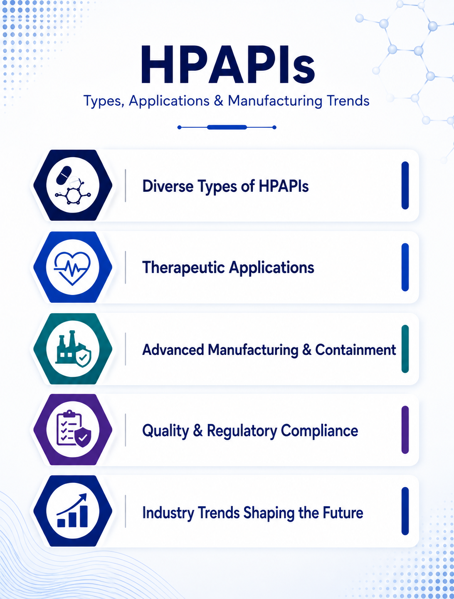

HPAPI Manufacturing: Key Considerations, Applications & Industry Trends
13 August 2026

Highly potent active pharmaceutical ingredients (HPAPIs) are pharmaceutical compounds that produce significant pharmacological effects at relatively low doses. Their high potency requires pharmaceutical manufacturers to implement appropriate controls for operator protection, cross-contamination prevention, product quality, and safe material handling.
HPAPI manufacturing requires specialized containment strategies, process controls, analytical capabilities, and GMP quality systems. Depending on the molecule and process, manufacturers may work with highly potent small molecules, cytotoxic compounds, steroids, hormones, and other potent APIs.
For pharmaceutical companies, selecting an HPAPI Manufacturer depends on factors such as the molecule, occupational exposure limit (OEL), manufacturing scale, containment requirements, process complexity, quality standards, and regulatory expectations.
Types of HPAPIs
Cytotoxic APIs
Cytotoxic compounds represent an important segment of the HPAPI landscape, particularly in specialized pharmaceutical products. Their production may require closed processing, contained material transfer, appropriate equipment, validated cleaning procedures, and controlled handling.
Highly Potent Small-Molecule APIs
Many HPAPIs are small molecules produced using established chemical synthesis approaches. However, their high potency requires additional controls throughout manufacturing.
An HPAPI Manufacturer may require contained charging and transfer systems, dust-control measures, appropriate process equipment, analytical testing, and controlled cleaning procedures.
Highly Active Steroidal and Hormonal APIs
Certain steroidal and hormonal APIs have potent biological activity and may require specialized containment and handling controls. Requirements vary according to the compound, OEL, process, dosage, and manufacturing environment.
Therapeutic Applications of HPAPIs
HPAPIs are used across several therapeutic areas, depending on the pharmacological properties of individual molecules. Applications include oncology and targeted cancer therapies, hormonal therapies, cardiovascular medicines, central nervous system therapies, immunological and specialty medicines.
Key Considerations for Selecting an HPAPI Manufacturer
When evaluating an HPAPI Manufacturer, pharmaceutical companies should assess the supplier's technical capabilities, containment strategy, quality systems, regulatory readiness, and manufacturing capacity.
Important considerations include:
- Occupational exposure assessment and OEL management
- Containment facility
- Equipment suitability and segregation
- Cleaning and cross-contamination controls
- Analytical testing and impurity control
- Process development
- Scale-up capabilities
- GMP compliance and quality systems
- Manufacturing capacity and supply continuity
- Regulatory documentation
Key Trends in HPAPI Manufacturing
Growing Demand for Potent Medicines
The development of targeted and low-dose medicines continues to support demand for HPAPIs. This is increasing the need for manufacturers with specialized containment infrastructure, technical expertise, and scalable production capabilities.
Advanced Containment Technologies
Containment remains a central focus of High Potent API Manufacturing. Manufacturers are increasingly using closed processing, contained transfer systems, isolators, specialized equipment, and engineering controls to reduce operator exposure and cross-contamination risks.
Expansion of HPAPI Contract Manufacturing
Pharmaceutical companies may outsource HPAPI development and production to specialized partners rather than establishing dedicated infrastructure internally. HPAPI Contract manufacturing can support process development, clinical supply, scale-up, technology transfer, and commercial manufacturing. The appropriate scope depends on the molecule and development stage.
Flexible and Scalable Manufacturing
HPAPIs may progress from small development batches to clinical and commercial production. Manufacturers therefore need scalable processes that maintain containment performance, process consistency, cleaning effectiveness, and product quality across different production volumes.
The Role of HPAPI Contract Manufacturing
HPAPI Contract manufacturing provides pharmaceutical companies with access to specialized facilities, equipment, technical expertise, and manufacturing capacity.
When selecting an HPAPI Contract manufacturing partner, companies should evaluate experience with the relevant molecule, containment capabilities, GMP systems, regulatory track record, manufacturing capacity, and ability to support long-term supply.
Emerging Opportunities
HPAPI manufacturing may involve multiple stages, from process development and scale-up to clinical supply and commercial production. Each stage requires appropriate controls for containment, process performance, analytical testing, cleaning, and product quality.
For pharmaceutical companies, an experienced HPAPI Manufacturer can support the transition from development batches to reliable commercial supply.
HPAPI Contract manufacturing can provide access to specialized infrastructure and expertise throughout these stages, allowing pharmaceutical companies to scale production while maintaining appropriate quality, safety, and containment controls.